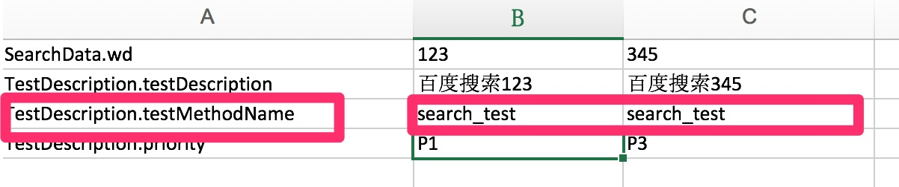

0.简单示例
以下展示一个WebUI测试从头到尾的一个过程：
- 解析页面元素创建PageObject
- 自动生成annotation 或者测试代码
- 测试数据准备
- 测试用例准备
- 测试配置准备
- 编写检查点
- 执行和debug
- 扩展测试数据
让我们动起手来,不过为了简单的描述测试的思路,还是从使用Baidu查询的例子开始,同时这个章节的目的是让你熟悉一个自动化包含那些内容 ,以及每个内容需要做什么怎么做
- 页面
- 测试数据
- 流程
- 测试类
1. 创建Page Object
Page Object是用来存放被测页面元素说明的一个类，它就是对应了一个被测页面涉及到元素的一个模型，放在一个类里的好处是便于复用和包装，不用把如何查找页面元素的代码散落各处，同时在封装后使用，上层的测试用例级别的代码基本不会和这块再打交道，而是专注于什么样的业务流程。下面是一个使用辅助工具来进行解析页面元素创建Page Object 类的过程的说明。
1.1 解析页面元素:其实就是一个录制的过程
给页面元素定位非常花费时间，所以录制是一个不错的策略，不同的是这里的工具是解析页面html 源码，来得到我们想要的Page Object 类的格式。这些辅助工具还不能完全你把所有元素都非常好识别，但是还是可以起到一定程度提高效率。 那么为什么自己写一个征用的工具呢？一个原因是没有太好的工具可以非常智能的完成这个任务，另外一个是使用JSOUP这样的工具写一些起到作用的工具不难(当然如果要完全解析正确很难).关于如何解析页面元素会在页面解析说明部分做详细解释.
已Baidu的首页为例:

可以看到我们主要需要测试的部分是上图中标示部分,所以我们需要
- 将页面中标示部分的HTMl源码取出
- 然后复制到main/resources 目录下的source.txt文件
- 运行如下的代码
public class CodeGenerator {
public static void main(String[] args) {
WebUICodeGenerator.build().generatePageObjectClass("source.txt");
}
}
得到如下的结果:
@FindBy(id="su")
@ElementName(elementName = "su")
private Button su;
@FindBy(linkText="手写")
@ElementName(elementName = "手写")
private Link 手写;
@FindBy(linkText="拼音")
@ElementName(elementName = "拼音")
private Link 拼音;
@FindBy(linkText="关闭")
@ElementName(elementName = "关闭")
private Link 关闭;
@FindBy(name="wd")
@ElementName(elementName = "wd")
private InputBox wd;
1.2 创建页面类(PageObject)
如果没有有明显的错误就根据如下结果创建页面类:
public class BaiDuPage extends ExecutablePageObject {
public BaiDuPage(WebDriver driver) {
super(driver);
}
@FindBy(id = "su")
@ElementName(elementName = "su")
private Button su;
@FindBy(linkText = "手写")
@ElementName(elementName = "手写")
private Link 手写;
@FindBy(linkText = "拼音")
@ElementName(elementName = "拼音")
private Link 拼音;
@FindBy(linkText = "关闭")
@ElementName(elementName = "关闭")
private Link 关闭;
@FindBy(name = "wd")
@ElementName(elementName = "wd")
private InputBox wd;
--- 自动生成的getter/setter
}
至此页面类就做好了.
ps: 构造方法和getter/setter方法都可以通过IDE自动生成的
2.创建注解和测试流程类
假设我们想要测试的是:输入关键字,直接搜索这样一个业务,那么我们需要一些标示这个测试流程的一些方法类支撑, 以下是如何构建的一个过程,分为:
- 创建流程注解
- 编写流程程序
2.1 生成注解
运行如下代码就可以生成注解:
public class CodeGenerator {
public static void main(String[] args) {
WebUICodeGenerator.build().generateAnnotationStatement("Baidu Search", BaiDuPage.class);
}
}
得到结果如下,把他复制到刚才创建好的页面类里面,同时添加最后的提交按钮到elementActionDescription里面:
@UIActions(actions={@UIAction(processName="BaiduSearch",elementActionDescription={"wd"})
})
新的页面类:
@UIActions(actions={@UIAction(processName="BaiduSearch",elementActionDescription={"wd","su"})
})
这里解释以下elementActionDescription, 这个放的内容是你执行整个业务流程需要操作的哪些WEB的元素,这个例子里面就是一个关键字框 ,一个提交按钮.
如果有其他的业务流程需要测试,可以在添加@UIAction.
2.2 生成流程测试代码
public class CodeGenerator {
public static void main(String[] args) {
WebUICodeGenerator.build().generateFlowCodesForAnnotatedPage("Baidu Search",BaiDuPage.class);
}
}
得到结果:
public static void BaiduSearch(WebDriver driver,TestData testData){
WebTestActionBuilder.execute(Lists.newArrayList(
BaiDuPage.class)
,"Baidu Search",driver,testData);
}
创建一个关于搜索的测试类
public class BaiduSearchFlow {
public static void BaiDuSearch(WebDriver driver,TestData testData){
WebTestActionBuilder.execute(Lists.newArrayList(
BaiDuPage.class)
, "BaiDu Search", driver, testData);
}
}
以上步骤可以通过一步实现:
public class CodeGenerator {
public static void main(String[] args) {
WebUICodeGenerator.build().generateAnnotationAndFlowCode("BaiDuSearch",BaiDuPage.class);
}
}
结果就是:
-- Class Name:BaiDuPage
@UIActions(actions={@UIAction(processName="BaiDu Search",elementActionDescription={"wd"})
})
public static void baiDuSearch(WebDriver driver,TestData testData){
WebTestActionBuilder.execute(Lists.newArrayList(
BaiDuPage.class)
,"BaiDu Search",driver,testData);
}
获取以上代码之后: 1. 复制@UIActions到Page类 2. 创建新的类,然后复制方法baiDuSearch到这个类里面
至此测试流程就好了,如果在页面涉及的元素不多的情况下,这样做就有点啰嗦,不过如果页面元素比较多的情况下,这样就相对 会方便一点.
3. 创建测试数据类
根据页面模型类生成测试数据:
public class CodeGenerator {
public static void main(String[] args) {
WebUICodeGenerator.build().generateTestDataClass(BaiDuPage.class);
}
}
得到结果:
private String wd;
创建测试数据类(需要继承TestData类)用来做数据驱动:
public class BaiduSearchData extends TestData {
private String wd;
public String getWd() {
return wd;
}
public void setWd(String wd) {
this.wd = wd;
}
}
4. 构建测试用例类
在test目录下面的flows目录创建测试类:
public class BaiduSearchFlowTest extends BaseWebCurrencyTest{
@DataProvider(name = "search_data")
public Iterator<Object[]> getTestData(Method m) throws Exception{
Map<String, Class> clazzMap = new HashMap<String, Class>();
clazzMap.put("SearchData", BaiduSearchData.class);
clazzMap.put("TestDescription", TestDescription.class);
Iterator<Object[]> y = TestDescription.filterByMethod("testcase/flows/BaiduSearchTestCases.xls", m, clazzMap);
return y;
}
@Test(dataProvider = "search_data",description = "百度搜索")
public void search_test(BaiduSearchData searchData,
TestDescription td) throws Exception {
WebDriverHelper.get(DriverFactory.get(),"http://www.baidu.com");
BaiduSearchFlow.BaiDuSearch(DriverFactory.get(),searchData);
}
}
这里面有一些TestNG的注解:
- DataProvider : 提供数据驱动的数据源
- Test: 表明方法或者类是用来测试的
4.1 构建测试用例EXCEL
在TestDescription.filterByMethod 方法指定的目录里面创建一个Excel文件.文件格式如下:

图中标示的部分需要填写你测试方法名字,search.wd实际上就是你的测试数据,如图所示的文件,标示两个搜索用例, 一个是搜索123,一个搜索345
5. 运行测试用例
理想情况下,运行测试用例文件,测试就可以跑起来了.
6. 配置测试使用testng的xml文件
<suite name="BaiDu Search">
<listeners>
<listener class-name="com.dooioo.automation.listener.testng.SimpleWebDriverScreenShotTestListener"/>
</listeners>
<test verbose="1" name="baidu search" >
<classes>
<class name="com.dooioo.automation.flows.BaiduSearchFlowTest"/>
</classes>
</test>
</suite>
直接运行这个文件就可以驱动程序了.
至此一个自动化的程序就好了(检查点还没有加),如果不同的测试数据代表你的不同测试用例了.总结以上的步骤:
- 常见页面类
- 创建操作方法
- 创建测试数据
- 构建测试用例类
- 创建测试用例
- 配置testngfile,运行测试